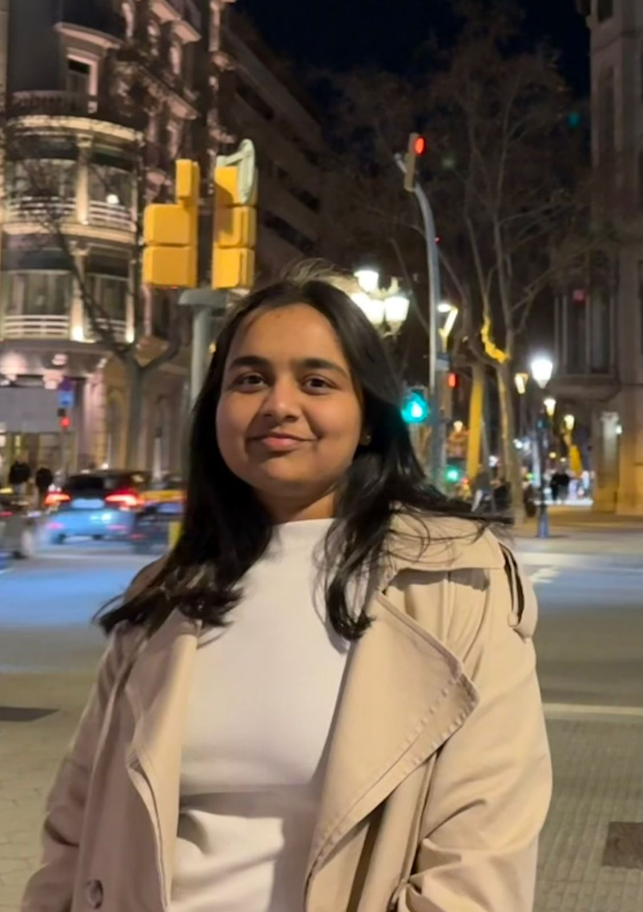

Marie Curie Doctoral Candidate · 6G TERRAIN · ISI/Athena Research Center
Curious. Ambitious. Open to Collaborate.

A researcher driven by curiosity, shaped by ambition, and fueled by the courage to explore the unknown.
I'm Srushti Gangadhar Surpur, a Marie Curie Doctoral Candidate in the 6G TERRAIN project, funded by Horizon Europe. Currently based at the ISI/Athena Research Center in Patras, Greece, my PhD is affiliated with Universitat Politècnica de Catalunya (UPC), Barcelona.
My research focuses on native AI analytic approaches in telecommunications, exploring how intelligent systems can revolutionize next-generation networks. I'm passionate about pushing the boundaries of what's possible at the intersection of AI and 6G.
Before my doctoral journey, I graduated with an MSc in Computer Science (Data Science) from Trinity College Dublin and earned my bachelor's degree with 1st Rank in Computer Science from Savitribai Phule Pune University.
6G TERRAIN · UPC Barcelona / ISI Athena Research Center, Patras
Horizon Europe FundedTrinity College Dublin, Ireland
🇮🇪 Trinity College DublinVidya Pratishthan's KBIET, Baramati · Savitribai Phule Pune University
🏆 1st Rank: CS DepartmentExploring the frontiers of AI-native analytics for next-generation telecommunications.
My doctoral research investigates native AI analytic approaches in the context of 6G networks. As part of the 6G TERRAIN project, I collaborate with researchers across Europe to explore how machine learning paradigms, from meta-learning to federated approaches, can be natively integrated into telecommunications infrastructure.
My journey in research began during my undergraduate years when I developed a pneumonia detection model from chest X-rays and published a comprehensive review paper on existing detection algorithms, which has since been cited in the field. Around the same time, I worked on an open-source engine using machine learning to enhance skills of visually impaired individuals, a project that combined accessibility with AI and has received notable academic recognition.
During my time in Ireland, I contributed to a research proposal on Explainable AI for breast cancer detection, exploring how interpretable models can aid clinical decision-making. For my MSc dissertation at Trinity College Dublin, I worked on underwater image restoration using transformer architectures, achieving superior PSNR and SSIM scores that surpassed state-of-the-art models.
Beyond academia, I've been deeply drawn to Generative AI and Agentic AI. I built Genie, an AI-powered content creation assistant that generates text, captions, and supports A/B testing to measure real-world engagement performance.
Doctoral Researcher
Whether it's about AI, 6G, federated learning, or just a good conversation about research: I'd love to connect.
Get in TouchMy contributions to research, growing one paper at a time.
A diary of turning points, milestones, and memories from my journey.
📍 Dublin, Ireland 🇮🇪
April 2026
Graduated with an MSc in Computer Science (Data Science) from Trinity College Dublin — a milestone that marks the bridge between a year of deep learning and the doctoral journey ahead. From the cobbled squares of Trinity to the frontiers of 6G, every step has been worth it.
Milestone📍 Patras, Greece 🇬🇷
Ongoing
Taking flight toward a new chapter, moving to Patras marked the beginning of my PhD journey. Currently based at the ISI/Athena Research Center, I am exploring new frontiers in 6G and AI-native networks.
Milestone📍 Patras, Greece 🇬🇷
February 2026
Participating in the Patras IQ 2026 exhibition, showcasing innovations and research to the technology community.
Activity📍 Barcelona, Spain 🇪🇸
January 2026
Attended the 6G TERRAIN mid-term meeting in Barcelona. Discussing progress and future directions with incredible colleagues.
Activity📍 Dublin, Ireland 🇮🇪
September 2025
A transformative year at Trinity College Dublin. Graduation day was the culmination of an intense and rewarding MSc journey.
Milestone📍 Baramati, India 🇮🇳
June 2024
Foundational years at VPKBIET. Graduating as department topper was just the beginning of my global academic pursuit.
Milestone📍 My Workspace 💻
Everyday
Where the research papers meet the code. My essential space for deep work and persistent learning.
LifeFind me across the internet: let's talk research, AI, or anything interesting.
Professional network
Visit Profile →Publications & citations
Visit Profile →Research network
Visit Profile →Researcher ID
Visit Profile →Academic profile
Visit Profile →I'd love to hear from you: whether it's about research collaborations, AI conversations, opportunities in academia or industry, or just a good chat.
surpurs02@gmail.com